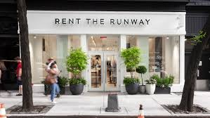

The future of sustainability: The Consumer
Trade policies and regulations will be the most effective solutions in bringing about large-scale change to the fast fashion industry. However, consumers in high income countries have a role to play in supporting companies and practices that minimize their negative impact on humans and the environment. While certifications attempt to raise industry standards, consumers must be aware of greenwashing and be critical in assessing which companies actually ensure a high level of standards versus those that make broad, sweeping claims about their social and sustainable practices.
The fast fashion model thrives on the idea of more for less, but the age-old adage “less in more” must be adopted by consumers if environmental justice issues in the fashion industry are to be addressed. The United Nation’s SDG 12, “Ensure sustainable consumption and production patterns,” seeks to redress the injustices caused by unfettered materialism. Consumers in high income countries can do their part to promote global environmental justice by buying high-quality clothing that lasts longer, shopping at second-hand stores, repairing clothing they already own, and purchasing from retailers with transparent supply chains.
Who is your favorite sustainable retailer?
Rent the Runway brings the fashion world into sustainability
Rent the Runway is a retailer founded on the idea of an unlimited and sustaninable closet. Customers can either pay a monthly subscription and get 4 items or unlimited items per month, or the customers can purchase item by item. From its inception, the company has stood for allowing women to be any kind of fashion guru their heart desires while saving the evnironment. From their innovative work, the retailer has saved lots of wasted products and clothing becasue its customers reuse the items they rent. Although they were the start to this trend, they are not the end. Companies like Urban Outfitters are now beginning to introduce rental services, as well, in order to best adapt to the trend of sustainability and resourcefullness. Switching to renting may feel like a minor switch, but it has an impactful force on our world today.
What Can You Do?
- Shop local, small stores
- Know who you are shopping at-
- Donate your clothes to resellers
- THRIFT SHOP!
- RENT RENT RENT!
- Consciously shop: fewer high end rather than numerous fast-fashion items!
The future of sustainability: The Companies
In 2013, H&M launched a global garment collecting initiative that encourages consumers to drop off any unwanted apparel at their stores. It has since collected >32,000 tons of clothing, enough to make >100 million t-shirts. With its collection of unwanted clothing, H&M has partnered with I:Collect, a solutions provider for reusing / recycling clothing. I:Collect will either sell the apparel as second hand clothing, reuse the clothing as other products (ex. cleaning cloth), or recycle the clothing into textile fibers for other usage (ex. insulation).
In addition to the global garment collecting initiative, H&M can further shape consumer behavior by using a “Green Index” on each product it sells like Timberland has in the past. Timberland has put a “Green Index” on some of its products that provide a measure of the environmental impact of a product. By seeing an index and perhaps accompanying data on how far a product has traveled and how, a consumer may be incentivized to buyer fewer products at the store.
H&M can further impact consumer behavior by slowing down the fashion cycle. Instead of launching new lines constantly throughout the seasons and years, H&M can launch new lines just once a season, manufacture higher quality clothing that lasts longer, and design staple clothing items to reduce the number of clothing items one may need to purchase. However, this is challenging since consumers may just shift their buying to another fast fashion company and companies are incentivized to increase their own sales. This approach would require cooperation across the industry.
H&M itself can reduce carbon dioxide emissions from transportation by using manufacturers that are local to each market. However, using local manufacturers can be challenging for several reasons including higher labor cost as well as the cost of rebuilding manufacturing infrastructure. Regulation that forces such practices would also be controversial. As such, any regulation would have to provide fast fashion companies with the right incentives such as lower logistics and production costs. I would propose that governments provide tax breaks or subsidies to fast fashion companies that build manufacturing infrastructure in the same region they sell in.